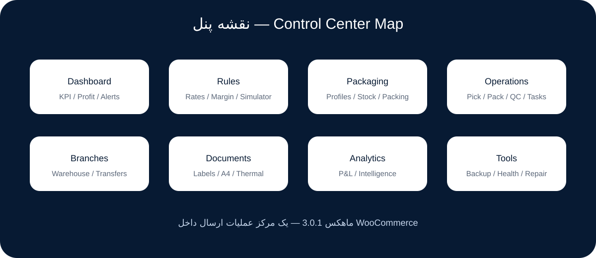
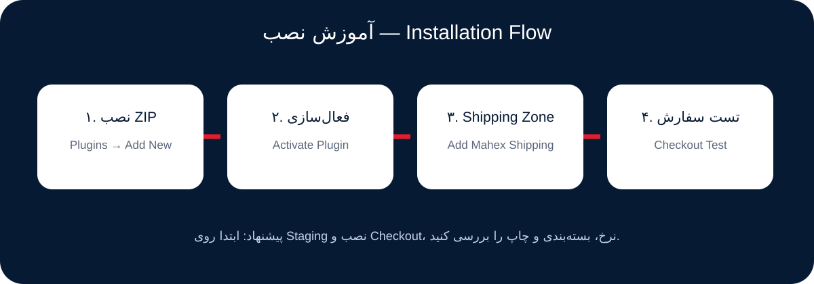
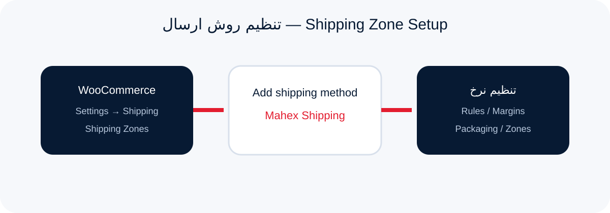
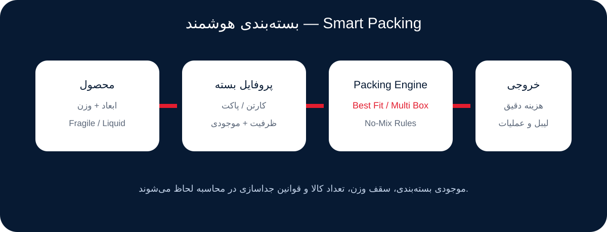
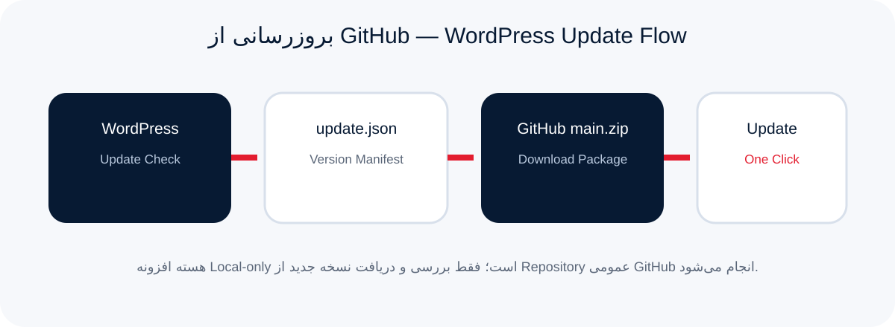

نرخگذاری، بستهبندی هوشمند، چندشعبهای، عملیات انبار، لیبل و بارنامه، تحلیل سود، کنترل کیفیت، رهگیری داخلی و بروزرسانی مستقیم از GitHub در یک افزونه.
Pricing rules, smart packing, multi-branch operations, warehouse workflows, labels, profit analytics, quality control, local tracking and direct GitHub updates in one plugin.
نسخه 3.0.1 روی هسته چندنسخهای پروژه ساخته شده و ماژولهای نرخ، بستهبندی، عملیات، هوش تحلیلی و کنترل مرکزی را کنار هم قرار میدهد.
Version 3.0.1 combines pricing, packing, operations, analytics and network control in a single WooCommerce shipping stack.
قوانین AND/OR، اولویت، وزن، مقصد، سود، سقف کرایه، یارانه و شبیهساز.
Best Fit، چندکارتنی، No‑Mix، شکستنی/مایع، موجودی و هزینه بستهبندی.
Pick List، Packing Station، Queue، QC، Task و Ready‑to‑Ship.
شعب، انبارها، تخصیص سفارش، انتقال موجودی و تحلیل عملکرد شعبه.
Loss Detector، Forecast، Risk Score، Daily Metrics و گزارش سودآوری.
نمایش نسخه جدید در صفحه افزونههای وردپرس و بروزرسانی با یک کلیک.

برای سایت اصلی، ابتدا یک نسخه Staging داشته باشید. نصب افزونه مثل افزونههای استاندارد WordPress است.
Test on staging first. Installation follows the standard WordPress plugin flow.


برای هر محصول میتوانید ابعاد، وزن، پروفایل بسته، انبار مبدا، زمان آمادهسازی، No‑Mix و اطلاعات عملیاتی تعیین کنید.

کارتن/پاکت را با ابعاد، وزن خالی، سقف وزن، سقف تعداد، موجودی و قیمت ثبت کنید.
ابعاد محصول یا پروفایل، انبار، ارزش مرسوله و قواعد جداسازی را انتخاب کنید.
سیستم ترکیب بستهها را محاسبه کرده و هزینه و عملیات را به سفارش متصل میکند.
نسخه 3.0.1 یک Update Channel عمومی دارد. WordPress فایل dist/update.json را با کش ۶ ساعته بررسی میکند و فقط اگر نسخه جدیدتر باشد آن را در صفحه Plugins نمایش میدهد.

hm_mahex_github_updates_enabled میتوان Update Check را غیرفعال کرد.add_filter( 'hm_mahex_github_updates_enabled', '__return_false' );
| مرحله | فایل | کار |
|---|---|---|
| 1 | mahex-shipping-for-woocommerce.php | Version و HM_MAHEX_VERSION را افزایش دهید. |
| 2 | update.json | version، last_updated و changelog را بهروزرسانی کنید. |
| 3 | CHANGELOG.md | تغییرات نسخه را ثبت کنید. |
| 4 | main | همه تغییرات را در یک Commit سالم منتشر کنید. |
| 5 | WordPress | Updates → Check again و سپس بروزرسانی را تست کنید. |
GitHub updater، Plugin Information modal، لینک مستندات، GitHub Pages دوزبانه و راهنمای انتشار.
Branches، Warehouse Network، QC، Tasks، Wallet/Credit و Network Analytics.
Forecasts، Loss Detector، Rule Suggestions، Finance Ledger، Workflows و Report Builder.